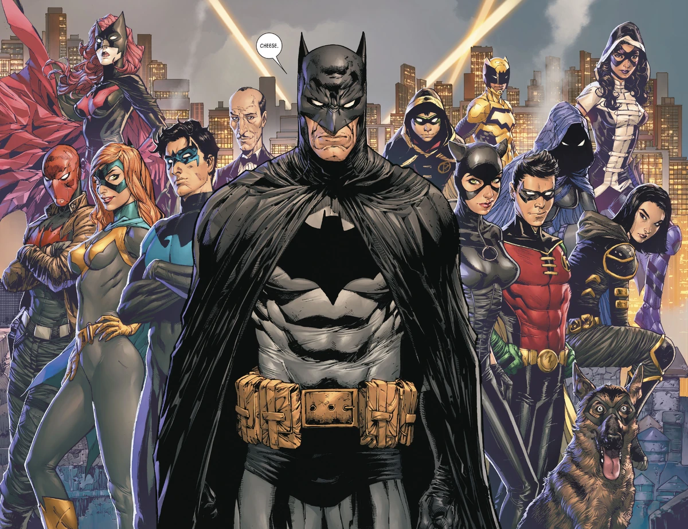
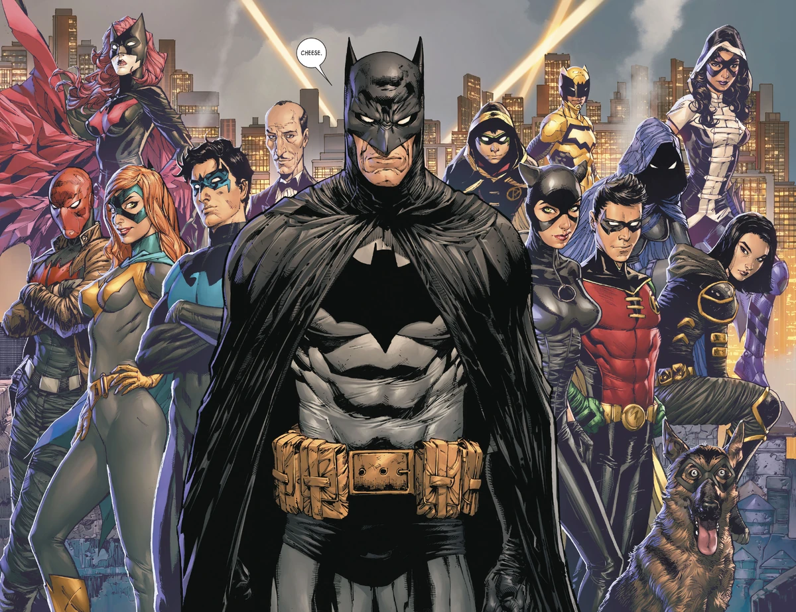

También conocido como Bruce Wayne, proclamado el mejor detective del mundo.
Descendiente de una de las familias fundadoras de Gotham City, es una de las personas más ricas del mundo, especializado en prácticamente todas
las artes marciales que existen.
Ha alcanzado la maestría en criminología y multitud de artes deductivas y
tecnológicas, teniendo uno de los IQ más altos del mundo.
Es uno de los miembros fundadores y co-líder de la JLA
y su principal financiador.
Mejor amigo de Bruce y el mayor superhéroe que ha visto la Tierra, demostrando que un alienígena puede ser más humano que nosotros mismos.
Aunque al principio tuvieron sus roces, el tiempo los hizo muy buenos amigos.
Durante un tiempo tuvieron una relación
, pero su amistad se cimienta en el profundo
respeto que se tienen el uno al otro.
Es la princesa Amazona e hija de Zeus.
 
